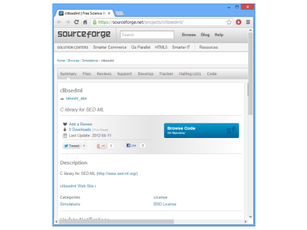
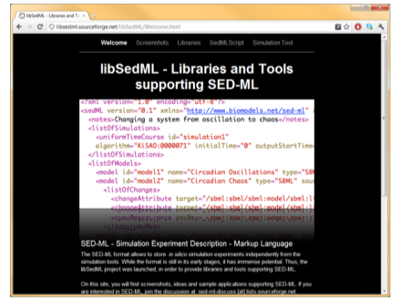
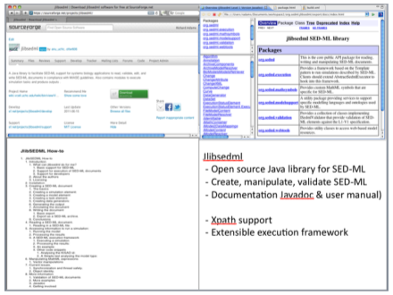

On this page we present libraries and tools working with SED-ML. If you would like your software tool to be listed here please fill out the survey.
| name | link | language | description | |
|---|---|---|---|---|
| libSEDML | https://github.com/fbergmann/libSEDML | C++, C# (Swig), Java (Swig), Perl (Swig), Python (Swig), R (Swig), Ruby (Swig) | C++ library for reading and writing SED-ML. Swig languange bindings for C#, Java, Python, R and Ruby. | |
| clibsedml | http://sourceforge.net/projects/clibsedml/ | C | clibsedml is aimed at being a portable C library for SED-ML. |  |
| libSedML | http://libsedml.sf.net | .NET library | libSedML is a set of .NET libraries for supporting SED-ML. The core library libSedML supports reading, validating and writing of SED-ML descriptions, along with all necessary utility functions for resolving models and XPath expressions. Two additional libraries are included: libSedMLRunner, which allows to schedule and execute simulation experiments encoded in SED-ML files using either RoadRunner# (Bergmann et al., 2006) or a variety of simulators exposed through the Systems Biology Workbench (SBW, Bergmann et al., 2006a) like iBioSim (Myers et al., 2009) and COPASI (Hoops et al., 2006). A third library, libSedMLScript, provides a script based language for defining SED-ML experiments. |  |
| jlibsedml | http://sourceforge.net/projects/jlibsedml/ | Java | An extensible open source Java library to create, manipulate, validate and store SED-ML files. jlibsedml also provides XPath support and an execution framework for running simulations and post-processing the results - clients provide the simulation implementation. |  |
| phraSED-ML | http://sourceforge.net/projects/jlibsedml/ | C++, Python (Swig) | A paraphrased, human-readable adaptation of SED-ML, phraSED-ML language allows modelers to use simple text commands to encode various elements of SED-ML (models, tasks, simulations, and results) in a format easy to read and modify. The library can translate this script to SED-ML for use in other softwares. |
| name | icon | link | description | |
|---|---|---|---|---|
| SED-ML Web Tools | http://sysbioapps.spdns.org/SED-ML_Web_Tools | The SED-ML Web Tools is an online application providing support to edit, simulate and validate SED-ML files online. It supports SBML as well as CellML models. | ||
| tellurium | http://tellurium.analogmachine.org/ | Tellurium (te.) is a Python environment based on spyder2 IDE. It combines a number of existing libraries, including libSBML, libRoadRunner (including libStruct), libAntimony, and is extensible via telPlugins. tellurium supports SED-ML L1V1, L1V2 and L1V3 | ||
| OpenCOR | http://www.opencor.ws/ | OpenCOR is an open source cross-platform modelling environment (and a replacement for COR) | ||
| SED-ML Script Editor | http://libsedml.sourceforge.net/libSedML/SedMLScript.html | The SED-ML Script Editor allows to construct SED-ML documents using a simplified script language. Starting out by directly importing SBML or CellML models an initial script is generated that can be simulated. From there it is easy to modify it to suite your needs. | ||
| JWS Online | https://jjj.bio.vu.nl/ | WS Online is a Systems Biology tool for the construction, modification and simulation of kinetic models and for the storage of curated models. It provides a selection of simulation experiments as SED-ML and Combine archives at https://jjj.bio.vu.nl/models/experiments/. | ||
| SBW Simulation Tool | https://sourceforge.net/p/sbwsimtool/wiki/Home/ | This project hosts the Simulation Tool, an extensible, interactive environment for carrying out simulation experiments of SBML models. This project can use RoadRunner or SBW enabled simulators to carry out simulations.The simulation tool directly supports SED-ML L1V1, and allows you to execute the simulations directly, with support for remote models (even in BioModels.net) and the SED-ML archive. | ||
| SED-ED | http://jlibsedml.sourceforge.net/sed-ed/index.html | SED-ED is a visual editor for viewing, editing and validating SED-ML documents using a graphical workflow notation. SED-ED previews model changes for any XML based model, generates XPath expressions for targetting model elements, displays and edits notes in an embedded browser, works with SEDX archives as well as plain SEDML files, retrieves models from Biomodels using Miriam URNs, provides standard undo/redo/copy/paste/align functionality for editing. SED-ED is available either as a standalone application, an Eclipse plugin (update site http://www.sbsi.ed.ac.uk/update) or an SBSIVisual plugin. | ||
| CellDesigner | http://celldesigner.org | CellDesigner is software for modeling and simulation of biochemical and gene regulatory networks, originally developed by the Systems Biology Institute in Japan. While CellDesigner itself is a sophisticated structured diagram editor, it enables users to directly integrate various tools, such as built-in SBML ODE Solver, COPASI, SBMLSimulator and SBW-powered simulation/analysis modules. CellDesigner runs on various platforms such as Windows, MacOS X and Linux, and is freely available from http://celldesigner.org/. | ||
| COPASI | http://copasi.org/ | COPASI is a software application for simulation and analysis of biochemical networks and their dynamics. COPASI is a stand-alone program that supports models in the SBML standard and can simulate their behavior using ODEs or Gillespie`s stochastic simulation algorithm; arbitrary discrete events can be included in such simulations. COPASI supports impor and export of SED-ML files. | ||
| Copasi2SedML | http://fbergmann.github.com/Copasi2SedML/ | Copasi2SBML contains a library and tools that allow to convert a COPASI file containing a time course task to SED-ML L1V1. This work is based on the COPASI C# bindings and libSedML.. | ||
| sbmlsim | https://github.com/matthiaskoenig/sbmlsim | sbmlsim is a collection of python utilities to simulate to simplify simulations with SBML models implemented on top of roadrunner. Features include among others simulation experiments, simulation reports parameter fitting. | ||
| Systems Biology Simulation Core Library | https://github.com/draeger-lab/SBSCL | The Systems Biology Simulation Core Library provides an efficient and exhaustive Java implementation of methods to interpret the content of models encoded in the Systems Biology Markup Language (SBML) and its numerical solution. This library is based on the JSBML project and can be used on every operating system for which a Java Virtual Machine is available. Please note that this project does not contain any user interface, neither a command-line interface, nor a graphical user interface. This project has been developed as a pure programming library. To support the MIASE effort, it understands SED-ML files. Its abstract type and interface hierarchy facilitates the implementation of further community standards, such as CellML. | ||
| iBioSim | http://www.async.ece.utah.edu/ibiosim | iBioSim has been developed for the modeling, analysis, and design of genetic circuits. iBioSim support models representing metabolic networks, cell-signaling pathways, and other biological and chemical systems. iBioSim supports importing and exporting models specified using the Systems Biology Markup Language (SBML). It can import all levels and versions of SBML and is able to export Level 3 Version 1. Simulations of SBML models based on SED-ML is supported. | ||
| bioUML | http://wiki.biouml.org/index.php/Landing | BioUML - Biological Universal Modelling Language - is an integrated Java platform for biomedical research. It spans a comprehensive range of capabilities, including access to databases with experimental data, tools for formalized description of biological systems structure and functioning, as well as tools for their visualization, simulation, parameters fitting and analyses. | ||
| SBML Testsuite | http://sbml.org/Software/SBML_Test_Suite | The SBML Test Suite is a conformance testing system for SBML. It allows developers and users to test the degree and correctness of SBML support provided in an SBML-compatible software package. All tests are available also as SED-ML files. | ||
| SED-ML Testsuite | https://github.com/SED-ML/sedml-test-suite | A test suite for SED-ML, modeled after the SBML test suite. |
© 2017-2020 sed-ml.org. Report website issue